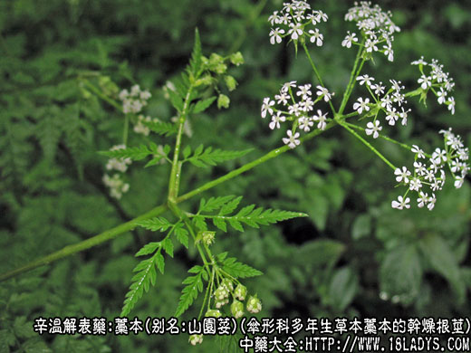
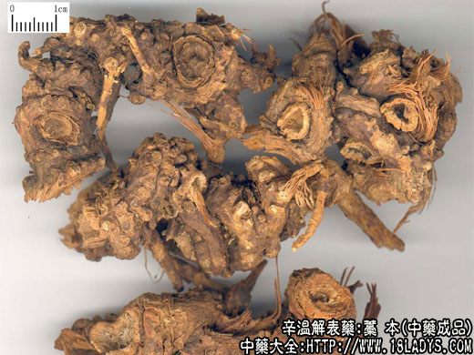
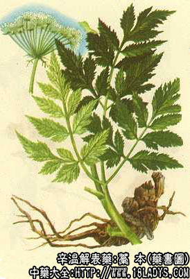

藁本为常用中药，《神农本草经》列为中品。目前商品主要有东北，华北产的北藁本和中南、西南产的藁本两大类。原植物前者为辽藁本，后者为藁本。
来源：为伞形科多年生草本植物辽藁本或藁本的干燥根及根茎，辽藁本均为野生；藁本多为栽培。
别名：山园荽（《救荒本草》）。
植物形态：辽藁本多年生草本，根茎短生，淡褐色多数细长根。茎中空，表面有纵沟，带紫色、茎生叶二至三回出羽状全裂。复伞形花序，花瓣白色，双悬果椭圆形。
产地：辽藁本（北藁本）主产河北龙关、蔚县、承德、山西、辽宁、吉林、内蒙古等地。
性状鉴别：北藁本：呈不规则的柱状或团块状，常分歧，顶端有残留茎基。表面暗棕色，密生细长而弯曲的根，有突起的节及根痕。质轻易折断，断面纤维状黄白色或浅棕色，有的外皮易剥落，气特异芳香，味辛麻舌。
以根茎粗壮，香味浓香为佳。
藁本：为不规则结节状圆柱形，有支根和须根痕，有一至数个残茎基，外表土黄色或黄棕色，有不规则的纵直沟纹，质硬，易折断，断面黄白色或淡黄色，气香、味微苦而辛。
以结节块状，大小均匀，香味浓者为佳。
主要成分：含挥发油，3—J基酜内酯、蛇床内酯、甲基丁香粉。
药理作用：镇痛。又实验证明其挥发油有抑制流感病毒的作用。
炮制：切片生用。
性味：辛温。
归经：入膀胱经。
功能：散风寒、祛风湿、止头痛。
主治：感冒风寒、头痛、头顶痛、肢节疼痛。
临床应用：常用于治疗由外感风寒、寒湿而引起的头痛，即感冒头痛。尤其适用于巅顶头痛（即头顶痛），也可缓解偏头痛和身痛。因鼻炎、鼻窦炎引起的头痛用之也有疗效。常配川芎、白芷、苍耳子等同用。
用量：2.4～9g。
处方举例：羌活芎藁汤加减：羌活、川芎、藁本、白芷、防风各3g，水煎服，治感冒头痛较剧者。
注：藁本由于植物来源复杂，产地众多，有栽培亦有野生，又因气候土壤和加工方法以及使用习惯不同，因而在商品形态色泽、规格等多方面存在着差异。除上述两大类藁本外，如江苏部分地区以伞形科植物骨缘当归的地上全株作藁本用，习称山藁本或土藁本。四川有香藁本、水藁本、和涪陵水藁本的区分，又有光藁本、毛藁本的不同规格。此外还有伞形科植物水芹的根充水藁本使用的地区。应注意区分。